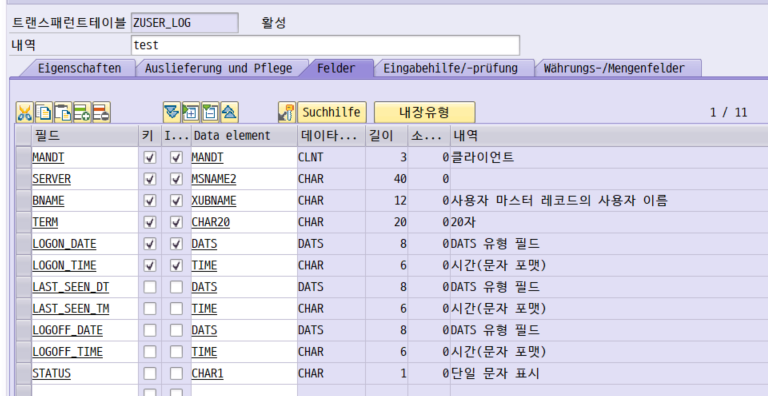
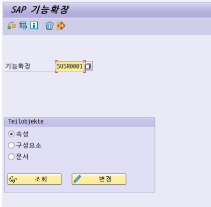
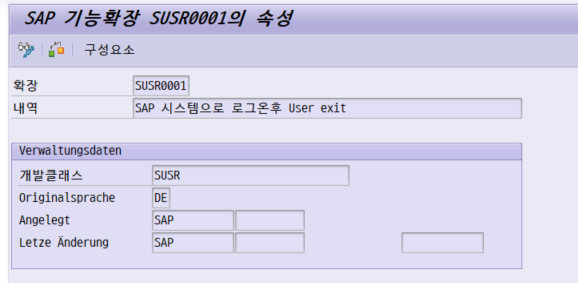
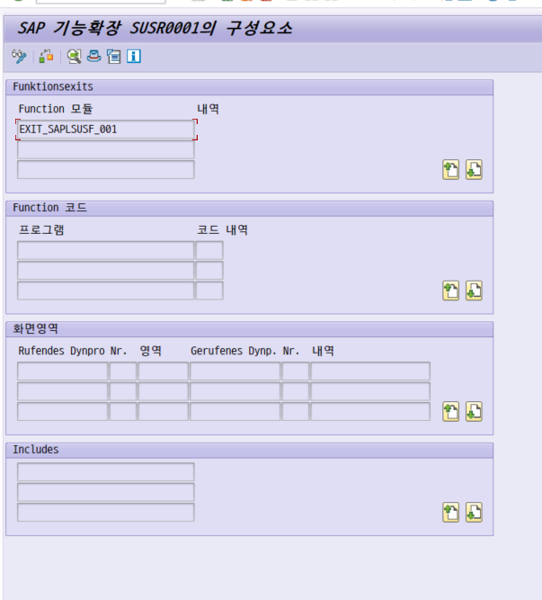
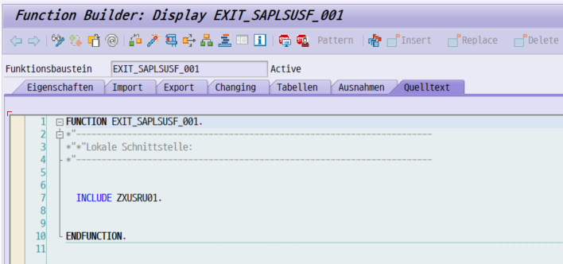
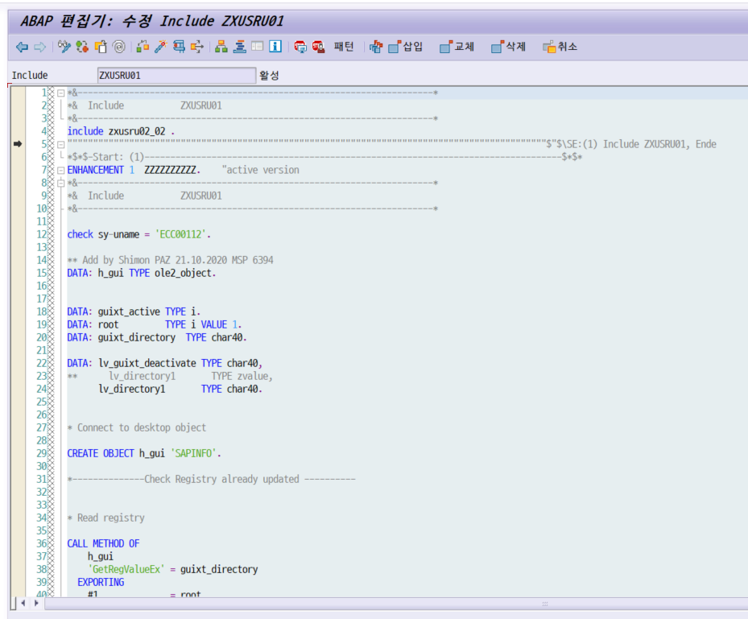
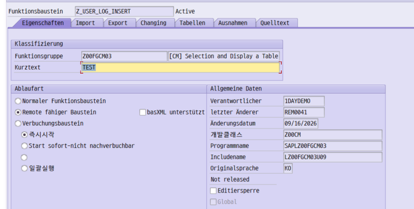
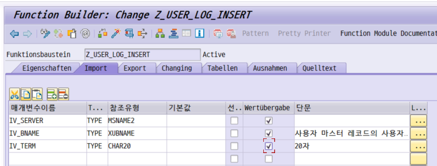
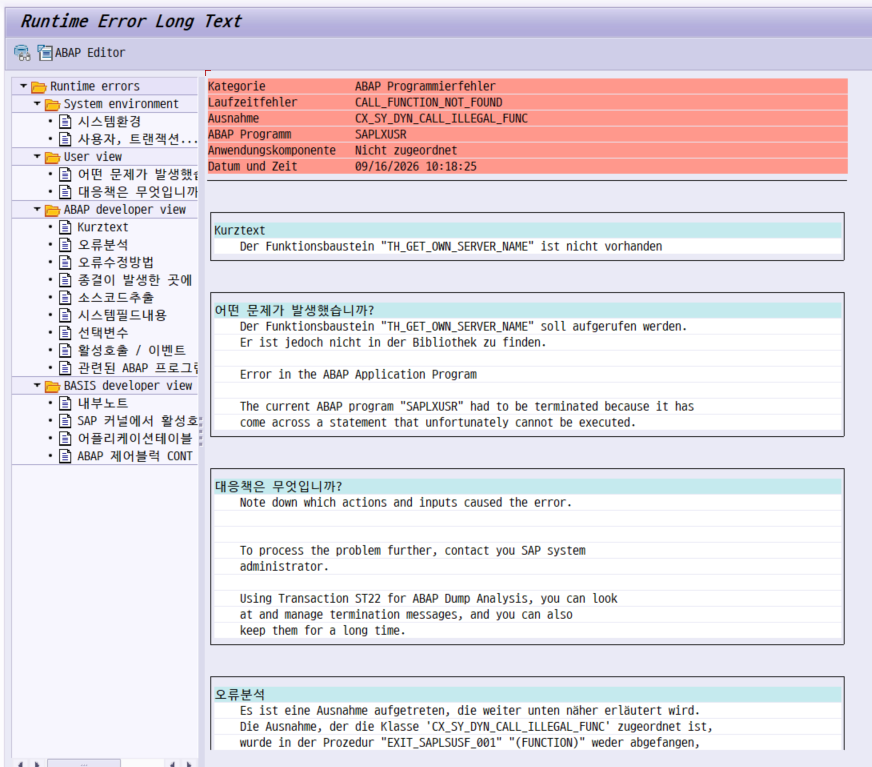
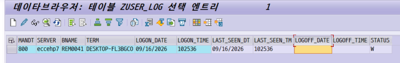

결론부터. 로그온 Exit은 한 번의 실수로 전 사용자의 로그인을 막을 수 있는 유일한 확장 지점입니다. 다른 Exit과 문법은 같지만 실패했을 때의 대가가 다릅니다.
SAP에는 "로그온 직후 내 코드를 한 번 태우는" 표준 자리가 있습니다. SUSR0001입니다. 접속이력 기록, 다중 로그온 제한, 시스템 공지 같은 것들이 여기 붙습니다. 그런데 이 자리는 덤프가 나면 그 사용자가 시스템에 들어오지 못하고, CHECK 한 줄이 이미 돌고 있던 다른 회사 로직을 조용히 죽입니다.
이 노트는 접속이력 테이블(ZUSER_LOG)에 로그온 시각을 남기는 실습을 따라가면서, 그 과정에서 실제로 밟은 지뢰 세 개를 같이 정리합니다.
SAP GUI에 ID/비밀번호를 넣고 Enter를 치면, 인증이 통과된 뒤 초기 화면이 뜨기 전에 SAP이 한 번 내 코드를 불러 줍니다. 그 자리가 기능확장 SUSR0001입니다.
sy-uname이 이미 확정되어 있고, 초기 화면 이전이라서 여기서 멈추면 아무것도 못 합니다.로그온 Exit에서는 방어 코드보다 사전 검증이 먼저입니다. EXCEPTIONS나 IF sy-subrc를 아무리 붙여도 못 막는 실패가 있습니다(Lesson 6). 넣기 전에 SE37에서 존재를 확인하고, 대상을 좁히고(Lesson 8), 별도 LUW로 분리하는(Lesson 5) 쪽이 훨씬 안전합니다.
이 노트의 실습은 커스텀 테이블 ZUSER_LOG에 로그온 시각을 1건 남기는 것입니다. 로그아웃 시각은 별도 배치가 채우는 구조지만, 이 노트는 로그온 쪽만 다룹니다.
| 오브젝트 | T-Code | 역할 |
|---|---|---|
ZUSER_LOG | SE11 | 접속이력 테이블. 서버·사용자·단말·접속시각 + 상태(W/P/H) |
Z_USER_LOG_INSERT | SE37 | 1건 INSERT하는 원격활성화 함수모듈 |
SUSR0001 | SMOD / CMOD | 로그온 기능확장 |
ZXUSRU01 | CMOD | 실제 코드가 들어가는 인클루드 |

ZUSER_LOG.
MANDT + 서버 · 사용자 · 단말 · 접속일 · 접속시각. 같은 사람이 같은 단말에서 재접속해도 별개 이력으로 남도록 접속시각까지 키에 넣었다.LAST_SEEN_DT/TM — "마지막으로 살아있음을 확인한 시각". 종료시각을 배치 실행시각으로 찍으면 접속시간이 배치 주기만큼 부풀려지므로, 이 값을 종료시각으로 쓴다.STATUS — W(접속중) · P(정상마감) · H(강제마감). 신뢰할 수 있는 종료시각과 추정치를 구분하기 위해 H를 따로 둔다.SAP에는 로그오프 Exit이 없습니다. 정상 로그오프뿐 아니라 세션 타임아웃, GUI 강제 종료, 네트워크 단절은 이벤트 자체가 발생하지 않습니다. 그래서 종료 시각은 "아직 살아있나"를 주기적으로 확인하는 배치로 잡을 수밖에 없습니다. 접속은 이벤트, 종료는 폴링 — 성격이 다르니 담당도 나눕니다.
User Exit은 이름만 알면 찾아 들어가는 경로가 늘 같습니다. 기능확장 이름(SUSR0001) → 구성요소(Function Exit) → 인클루드. 이 세 단계를 몸에 익히면 다른 Exit도 전부 같은 방식으로 열립니다.
SMOD에서 기능확장을 조회한다. T-Code SMOD → 기능확장 SUSR0001 → 부분오브젝트 속성 선택 → 조회.
SMOD는 읽기 전용입니다. 여기서 "이 Exit이 무엇인지"만 확인하고, 코드는 CMOD에서 넣습니다.
속성으로 정체를 확인한다. 내역에 "SAP 시스템으로 로그온후 User exit", 개발클래스 SUSR이 보이면 맞게 찾아온 것입니다.
구성요소에서 Function Exit을 확인한다. 상단 구성요소 버튼 → Funktionsexits 영역에 EXIT_SAPLSUSF_001 하나가 들어있습니다.
화면영역(Screen Exit)·Function 코드는 비어 있습니다 — 이 Exit은 함수 호출 지점 하나뿐이라는 뜻입니다.
함수모듈을 더블클릭해 인클루드로 내려간다. Function Builder가 열리고 소스코드 탭에 딱 한 줄, INCLUDE ZXUSRU01.이 있습니다.
이게 User Exit의 정체입니다 — SAP이 미리 INCLUDE Z... 한 줄을 심어 두고, 그 인클루드를 고객이 만들어 채우는 구조입니다.
ZXUSRU01을 더블클릭해 코드를 넣는다. 최초라면 "인클루드가 없습니다. 생성하시겠습니까?"가 뜹니다. 이미 코드가 있다면 Lesson 3으로.

SUSR0001 입력.

EXIT_SAPLSUSF_001 하나. 이걸 더블클릭한다.
INCLUDE ZXUSRU01. 한 줄이 전부. User Exit = SAP이 미리 심어 둔 빈 인클루드라는 구조가 그대로 보입니다.| 이름 | 읽는 법 |
|---|---|
SUSR0001 | 기능확장(Enhancement) 이름. SUSR = 사용자/보안 영역, 0001 = 일련번호. |
EXIT_SAPLSUSF_001 | EXIT_ + 호출하는 프로그램명(SAPLSUSF) + 일련번호. 어느 표준 프로그램이 나를 부르는지가 이름에 들어있다. |
ZXUSRU01 | ZX + 함수그룹명에서 딴 글자 + 번호. Function Exit의 인클루드는 전부 ZX로 시작한다. |
어떤 표준 프로그램에 끼어들고 싶을 때는 SE38에서 그 프로그램 소스를 열어 CALL CUSTOMER-FUNCTION을 검색하면 됩니다. 걸리는 번호가 곧 Function Exit이고, 거기서 SMOD로 역추적하면 기능확장 이름이 나옵니다.
코드를 실제로 넣고 활성화하는 건 CMOD입니다. 그런데 운영 시스템에서 SUSR0001은 이미 누군가 쓰고 있을 확률이 높습니다. 여기서 초보가 가장 많이 막힙니다.
새 CMOD 프로젝트를 만들고 SUSR0001을 넣으려 하면 "기능확장이 이미 다른 프로젝트에 사용되고 있습니다"로 막힙니다. 이건 버그가 아니라 설계입니다. 기존 프로젝트를 지우고 새로 만들면 안 됩니다 — 기존 기능이 같이 죽습니다.
CMOD → 유틸리티(메뉴) → SAP 기능확장 검색
기능확장 : SUSR0001
→ 실행(F8)
→ 결과에 표시되는 프로젝트명이 내가 작업해야 할 프로젝트다찾은 프로젝트를 CMOD에서 연다. CMOD → 프로젝트명 입력 → 변경.
구성요소 → EXIT_SAPLSUSF_001 → ZXUSRU01 순으로 더블클릭해 들어간다.
기존 코드를 먼저 읽는다. 남의 코드가 이미 돌고 있습니다. 어떤 조건에서 무엇을 하는지 파악하지 않고 위아래에 끼워 넣으면 Lesson 4의 사고가 납니다.
코드를 넣고 프로젝트를 활성화한다. 인클루드만 활성화해서는 안 되고, CMOD 프로젝트 자체가 활성 상태여야 Exit이 호출됩니다.
실제 운영 시스템의 ZXUSRU01은 보통 이런 모양입니다.
* 다른 인클루드를 또 부르고 있을 수 있다
INCLUDE zxusru02_02 .
*{ INSERT ... ← 수정 어시스턴트가 잡아 준 삽입 구간
*} INSERT
ENHANCEMENT 1 ZZZZZZZZ. "active version
CHECK sy-uname = 'ECC00112'. ← 이 줄이 뒤의 모든 것을 좌우한다
... 특정 사용자용 GuiXT 레지스트리 처리 ...
ENDENHANCEMENT.
ZXUSRU01 실물 — 이미 남의 코드가 돌고 있다.
INCLUDE zxusru02_02 . — 인클루드가 또 다른 인클루드를 부른다. 실제 로직이 어디 있는지 한 파일만 봐서는 알 수 없다.*{ INSERT ... *} — 수정 어시스턴트가 표시한 삽입 구간. 새 코드는 여기, 아래 ENHANCEMENT보다 위에 들어간다.check sy-uname = 'ECC00112'. — 이 한 줄이 조건 불일치 시 함수모듈 전체를 종료시킨다. 내 코드를 이 아래 넣으면 그 사용자 외에는 아무것도 실행되지 않는다. Lesson 4의 사고가 바로 이 구조에서 난다.** Add by ... 21.10.2020 MSP 6394. 여러 사람이 손대는 인클루드에서 추적을 가능하게 하는 최소한의 장치.인클루드는 위에서 아래로 실행됩니다. 내 코드를 기존 ENHANCEMENT 아래에 넣으면, 위쪽 CHECK가 실패하는 사용자에게는 내 코드가 아예 실행되지 않습니다. 위 예시라면 ECC00112 외에는 아무도 로그가 안 남습니다. 기존 CHECK보다 위에 넣으세요.
운영 오브젝트, 그것도 여러 사람이 손댄 인클루드입니다. 실제로 저 예시에도 ** Add by Shimon PAZ 21.10.2020 MSP 6394 같은 주석이 남아 있어서 "누가 왜 넣었는지" 추적이 됩니다. 내 코드에도 작성자 · 일자 · 요청번호 · 호출 대상을 남기세요.
"대상자가 아니면 그냥 넘어가자"는 생각으로 CHECK를 쓰는 건 자연스럽습니다. 그런데 Exit 인클루드 안에서 CHECK는 "다음 줄로 넘어가기"가 아닙니다.
| CHECK를 쓴 위치 | 조건이 거짓일 때 |
|---|---|
| LOOP · DO · WHILE 안 | 다음 반복으로 넘어간다 (CONTINUE와 같음) |
| 그 밖의 모든 곳 FORM · FUNCTION · METHOD · 이벤트 블록 |
그 처리블록 전체를 즉시 종료한다 |
ZXUSRU01은 함수모듈 EXIT_SAPLSUSF_001 안에 인라인으로 펼쳐집니다. 즉 여기서의 CHECK는 함수모듈을 빠져나갑니다. 내 코드 아래에 있던 것들은 전부 실행되지 않습니다.
ENHANCEMENT까지 같이 죽습니다.덤프가 안 납니다. 에러 메시지도, ST22 기록도 없습니다. 그냥 기존 기능이 조용히 안 돌 뿐입니다. 사용자가 "어? 이거 원래 되던 건데" 하고 문의할 때까지 아무도 모릅니다. 조용히 실패하는 로직이 가장 찾기 어렵습니다.
CHECK sy-uname IN lr_uname.IF sy-uname IN lr_uname. ... ENDIF.내 코드 뒤에 다른 코드가 올 수 있는 모든 자리(User Exit 인클루드, BAdI 구현, 공용 FORM)에서는 CHECK·EXIT·RETURN을 조건 분기 용도로 쓰지 마세요. 내가 통제하는 범위가 어디까지인지 불확실할 때는 IF가 정답입니다.
접속이력을 남기려면 결국 INSERT를 해야 합니다. 그런데 Exit 안에서 직접 INSERT + COMMIT WORK를 하면 로그온의 LUW에 내 DB 작업이 묶입니다.
* 비동기 호출 - 로그 적재가 실패해도 로그온은 진행된다
CALL FUNCTION 'Z_USER_LOG_INSERT'
STARTING NEW TASK 'ZULOG'
EXPORTING
iv_server = lv_server
iv_bname = sy-uname
iv_term = lv_term
EXCEPTIONS
communication_failure = 1
system_failure = 2
resource_failure = 3
OTHERS = 4.
* sy-subrc 의도적으로 무시 - 여기서 에러를 올려봐야 받을 곳이 없다STARTING NEW TASK는 원격활성화 모듈만 호출할 수 있습니다. 일반 함수모듈로 만들어 두면 활성화 단계에서 막힙니다.
| 탭 | 바꿀 것 | 이유 |
|---|---|---|
| 속성 | 처리유형 → 원격활성화 모듈 Remote fähiger Baustein |
STARTING NEW TASK는 RFC 호출이다. 일반 FM은 대상이 될 수 없다. |
| Import | 모든 파라미터 → 값에 의한 전달 Wertübergabe 체크 |
RFC는 프로세스 경계를 넘는다. 참조 전달(REFERENCE)은 성립할 수 없어 활성화 시 에러가 난다. |


로직을 FM으로 빼 두면 SE37에서 F8로 단독 실행해 볼 수 있습니다. Exit에 붙이기 전에 FM만 먼저 검증하세요. 여기서 안 들어가면 Exit에 붙여도 안 들어갑니다.
아래 코드는 "존재를 확신하지 못하는 FM을 EXCEPTIONS OTHERS로 감쌌으니 안전하다"고 생각하고 쓴 것입니다. 실제로는 덤프가 났습니다.
* 안전하다고 생각했지만 아니었다
CALL FUNCTION 'TH_GET_OWN_SERVER_NAME'
IMPORTING
own_name = lv_server
EXCEPTIONS
OTHERS = 1. ← 이게 안 막는다
IF sy-subrc <> 0.
lv_server = sy-host. "여기까지 오지도 못한다
ENDIF.
CALL_FUNCTION_NOT_FOUND / 예외 클래스 CX_SY_DYN_CALL_ILLEGAL_FUNC.SAPLXUSR. 사용자 Exit 인클루드가 속한 함수그룹이다.EXIT_SAPLSUSF_001. 정확히 로그온 Exit이다.EXCEPTIONS 절은 FM이 RAISE로 올린 예외를 받기 위한 장치입니다. FM 자체가 시스템에 존재하지 않으면 호출 시점에 런타임 에러가 발생하고, 그건 EXCEPTIONS의 사정권 밖입니다.
| 실패 상황 | 런타임 에러 | EXCEPTIONS | TRY/CATCH |
|---|---|---|---|
FM이 RAISE한 예외 | — | 잡힌다 | 해당 없음 |
| FM이 시스템에 없음 | CALL_FUNCTION_NOT_FOUND | 못 잡는다 | cx_sy_dyn_call_illegal_func |
| 파라미터 이름이 다름 | CALL_FUNCTION_PARM_UNKNOWN | 못 잡는다 | cx_sy_dyn_call_param_not_found |
| 필수 파라미터 누락 | CALL_FUNCTION_PARM_MISSING | 못 잡는다 | cx_sy_dyn_call_param_missing |
| FM 내부에서 덤프 | 각종 | 못 잡는다 | 대부분 못 잡는다 |
TRY.
CALL FUNCTION 'TH_GET_OWN_SERVER_NAME'
IMPORTING own_name = lv_server.
CATCH cx_sy_dyn_call_illegal_func.
lv_server = sy-host.
ENDTRY.TRY/CATCH로 감싸면 덤프는 막지만, 애초에 존재를 모르는 FM을 로그온 경로에 넣은 것 자체가 문제입니다. 방어 코드를 두껍게 하는 대신 SE37에서 존재를 먼저 확인하세요. 확인이 안 되면 그 FM을 안 쓰는 설계로 바꾸는 게 맞습니다.
* 인스턴스명 - TH_GET_OWN_SERVER_NAME 은 이 시스템에 없다
* 시스템 필드는 덤프 가능성이 없다
lv_server = sy-host.
① 검증하지 않은 FM을 운영 경로에 넣지 않는다 — SE37 존재 확인이 먼저.
② EXCEPTIONS OTHERS는 만능 방어막이 아니다 — 무엇을 잡고 무엇을 못 잡는지 구분한다.
③ 로그온 Exit에서는 방어 코드보다 사전 검증이 답이다.
로그가 정상 적재된 뒤 데이터를 열어 보니 시각이 맞지 않았습니다. 한국 시각은 13:55인데 테이블에는 102536이 들어 있었습니다.

LOGON_TIME이 한국 시각이 아니다.| 시스템 필드 | 기준 |
|---|---|
sy-datum / sy-uzeit | 애플리케이션 서버의 시스템 시간. 서버가 어느 시간대로 돌고 있느냐에 따라 값이 달라진다. |
sy-datlo / sy-timlo | 로그인한 사용자의 개인 시간대(SU3 설정) 기준 날짜·시각. |
sy-zonlo | 사용자의 개인 시간대 코드. |
GET TIME STAMP FIELD | 항상 UTC. 서버 시간대와 무관하다. |
이 실습 시스템은 UTC+5:30으로 돌고 있었습니다. 한국(UTC+9)보다 3시간 30분 느립니다.
* 이렇게 하면 하루 중 3시간 30분이 날짜가 틀린다
ls_log-logon_time = sy-uzeit + 12600. " 3:30 = 12600초
ls_log-logon_date = sy-datum. ← 날짜는 그대로
* 서버 22:00:00 인 경우
* 22:00:00 + 12600초 = 25:30:00
* → TIME 타입은 86400 으로 wrap → 01:30:00 시각은 맞음
* → LOGON_DATE 는 그대로 날짜가 하루 전한국 시각으로는 00:00~03:30입니다. 야근하거나 새벽에 들어오는 사람 로그가 통째로 틀어집니다. 게다가 12600이 소스에 박혀 있어서, BASIS가 서버 시간대를 바꾸는 순간 조용히 전부 어긋납니다.
CONSTANTS lc_tz TYPE timezone VALUE 'UTC+9'. " TTZZ 에서 코드 확인
DATA lv_ts TYPE timestamp.
GET TIME STAMP FIELD lv_ts. " 항상 UTC
CONVERT TIME STAMP lv_ts TIME ZONE lc_tz
INTO DATE ls_log-logon_date
TIME ls_log-logon_time.자정 넘김, 날짜 증가, 서머타임을 전부 SAP이 처리합니다. 그리고 서버 시간대가 바뀌어도 값이 흔들리지 않습니다 — 출발점이 항상 UTC이기 때문입니다.
SE16 → TTZZ 에서 쓰려는 시간대 코드가 실제로 있는지 보세요. 없는 코드를 넘기면 CONVERT TIME STAMP에서 런타임 에러가 납니다. KOREA가 없고 UTC+9만 있을 수도 있습니다. Lesson 6과 같은 종류의 실수입니다.
로그온 쪽(Exit)과 로그오프 쪽(배치)이 서로 다른 기준을 쓰면 접속시간 계산이 음수가 나오거나 3시간 30분씩 틀어집니다. 변환 로직은 FM 하나로 빼는 편이 안전합니다.
FUNCTION z_user_log_now.
*" EXPORTING EV_DATE TYPE DATS
*" EV_TIME TYPE TIMS
DATA lv_ts TYPE timestamp.
GET TIME STAMP FIELD lv_ts.
CONVERT TIME STAMP lv_ts TIME ZONE 'UTC+9'
INTO DATE ev_date TIME ev_time.
ENDFUNCTION.나중에 "UTC로 저장하자"로 방침이 바뀌어도 이 FM 한 곳만 고치면 됩니다. 호출하는 프로그램이 늘어날수록 차이가 커집니다.
로그온 Exit을 전 사용자에게 한 번에 여는 건 위험합니다. 영향 범위를 좁혀서 시작하세요.
* 파일럿 대상자 - 검증 후 확대 시 TVARVC 로 전환할 것
RANGES lr_uname FOR sy-uname.
lr_uname = 'IEQREM0026'. APPEND lr_uname.
lr_uname = 'IEQREM0041'. APPEND lr_uname.
lr_uname = 'IEQREM0042'. APPEND lr_uname.
IF sy-uname IN lr_uname. " CHECK 아님 (Lesson 4)
... 로그 적재 ...
ENDIF.RANGES 구조는 SIGN(1) + OPTION(2) + LOW + HIGH 로 이어진 문자형 구조입니다. 문자 리터럴을 통째로 대입하면 각 자리에 그대로 들어갑니다. I = Include, EQ = Equal, 나머지가 LOW. 가독성이 필요하면 필드별로 나눠 쓰는 편이 낫습니다.
사용자 ID가 소스에 박혀 있으면 대상이 바뀔 때마다 이관해야 합니다. 검증이 끝나면 TVARVC로 옮기세요.
* STVARV → 선택옵션 탭 → Z_USER_LOG_TARGET
* I / EQ / REM0026
* I / EQ / REM0041
SELECT sign, opti AS option, low, high
FROM tvarvc
INTO CORRESPONDING FIELDS OF TABLE @lr_uname
WHERE name = 'Z_USER_LOG_TARGET' AND type = 'S'.| 단계 | 대상 | 목적 |
|---|---|---|
| 1. 파일럿 | 소스에 ID 3명 하드코딩 | 영향 범위 최소화. 데이터가 적어 SE16N으로 눈 검증이 가능하다. |
| 2. 확대 | TVARVC로 이전 | 이관 없이 대상 변경. 운영 담당이 직접 조정 가능. |
| 3. 전사 | 조건 제거 + 사용자유형 필터 | RFC·배치 유저(WF-BATCH, ALEREMOTE 등) 제외 로직 필요. |
SUSR0001이 RFC·배치 로그온에도 호출되는지 확인하세요. 호출된다면 시스템 계정 로그가 대량으로 쌓입니다. 사용자 마스터의 사용자유형(USR02-USTYP)으로 걸러내는 조건이 필요합니다.
순서를 지키는 것 자체가 방어입니다. 특히 3번을 5번보다 먼저 하세요.
| # | T-Code | 할 일 |
|---|---|---|
| 1 | SE37 | 쓸 예정인 표준 FM이 실제로 존재하는지 전부 확인. 없으면 안 쓰는 설계로 바꾼다. |
| 2 | SE16 | TTZZ에서 시간대 코드 확인. 저장 기준을 정하고 문서에 명시한다. |
| 3 | SE37 | 로직을 담을 FM을 원격활성화 모듈로 생성. Import 파라미터는 전부 값에 의한 전달. |
| 4 | SE37 | FM을 F8로 단독 실행해 검증. 여기서 안 되면 Exit에 붙여도 안 된다. |
| 5 | CMOD | 유틸리티 → SAP 기능확장 검색 → SUSR0001이 할당된 프로젝트를 찾는다. |
| 6 | CMOD | ZXUSRU01의 기존 코드를 먼저 읽는다. CHECK가 있는지 확인. |
| 7 | CMOD | 기존 CHECK보다 위에 코드 삽입. IF ... ENDIF로 감싼다. 작성자 주석 필수. |
| 8 | CMOD | 프로젝트 활성화. 인클루드만 활성화해서는 호출되지 않는다. |
| 9 | — | 대상 외 계정으로 로그온해 기존 기능이 살아있는지 확인. |
| 10 | SE14 | 대상 테이블을 일시 제거한 상태에서 로그온 → 로그온이 정상 진행되는지 확인. |
| 11 | ST22 | 덤프가 없는지 확인. 있으면 즉시 CMOD 비활성화. |
| 12 | SE10 | 테이블·FM·Exit을 같은 TR로 묶어 이관. 롤백 TR을 미리 준비. |
MESSAGE(로그온 중단) · CHECK(뒤 코드 전부 죽음) · 동기 DB 갱신(LUW 묶임) · 검증 안 된 FM 호출(덤프) · 반복문/대기 로직(로그온 지연).
전 사용자 대상 코드를 넣기 전에, Exit의 영향을 받지 않는 계정이 있는지 확인하세요. 대상자 필터(Lesson 8)를 쓰면 필터 밖 계정이 자동으로 복구 경로가 됩니다.
로그온은 하루에 수백~수천 번 일어납니다. 확률 낮은 조건도 금방 드러납니다. 바로 운영에 올리지 마세요.
· TH_USER_INFO의 EXPORTING 파라미터명 — SE37에서 확인
· TTZZ의 시간대 코드 — KOREA인지 UTC+9인지
· SUSR0001이 RFC·배치 로그온에도 호출되는지
· 애플리케이션 서버의 시스템 시간대 — sy-uzeit와 실제 현지 시각 비교
· 인라인 선언(DATA(...)) 사용 가능 여부 — NW 7.40 이상
SAP LUW 완전 정리 — Lesson 5의 "별도 LUW로 분리"가 왜 유효한지는 LUW 노트의 번들링·Update Task 부분과 같이 보면 이해가 빠릅니다.
ABAP 디버깅 실무 노트 — Lesson 6의 ST22 덤프 읽는 법은 디버깅 노트에서 더 자세히 다룹니다.